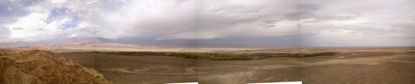
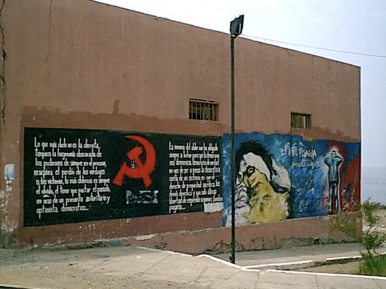

fin


The last part of our trip was a tour of the deserts and resorts of North Chile. We flew from Santiago up to Iquique, which was a bit like the spanish Mediterranean, a bit tacky. It was very noticeably hotter and sunnier than down in the South! But then this region is in the tropics, instead of being like Norway! We hired a little white Toyota Tercel which served us very well indeed going south along the new coast road, some of which wasn't paved yet, and also over several other unpaved desert roads that were allegedly only suitable for high clearance 4WD vehicles (oops sorry AVIS!). We had many adventures in the car, read on...
We set off from Iquique in the hot sun down the new coast road which is supposed to be replacing the Pan-American highway further inland as the main north south route. We were hoping to make it to Calama in time to find somewhere to stay the night, but in true chilean fashion the road degenerated into an unpaved construction site after a couple of hours, and it was getting dark! The scenery was cool though, as the sun set over the sea onto the desert which falls from the costal plateau steeply into the sea along the coast. As we climbed up over a pass at a headland, the traffic came to a standstill in a really long queue. We didn't know what was going on, and we were stuck there for at least a couple of hours before we were lead single file through the narrow gap they had blasted through the mountain to make the road. Luckily we had the traditional chilean music tape to listen to as there was no radio reception. "El condor pasa" is now a favourite! Eventually we made it to a hole called Tocopilla and found a particularly grotty hotel to stay in. Suzie wasn't very impressed with it. In the morning we set off again and made it into the Atacama desert, past the gargantuan copper mines and Calama (biggest in the world, accounting for 30% of Chile's GDP or something), and on to San Pedro De Atacama, where we stopped for a lager. Very unusually it had been raining in the desert and things were all a bit damp. Apparently it only rains there once every 10 years or something so we were very luck to see it. They call it a Bolivian winter, as that cool weather pattern often happens further east.
Here's some pics of the desert and the rain, the oasis of San Pedro de Atacama where all the houses are made of mud bricks, with the cloud covered volcanoes behind.
THIS NEVER HAPPENS!

Then we climbed up into the Andes once more to the geyser field near the volcanos. This involved our first extended run over unpaved roads, which were quite fun to drive on, if a little scary! When we got there it was getting dark, drizzling again and a bit muddy. We found some french geezers who had got their van stuck in the mud and were waiting for someone to come and pull them out, only there was no one with a truck for hundreds of miles. I think they were stranded there for three days, and it was pretty miserable. By this point my head was feeling a little woozy, and Suzie was feeling decidedly dodgy. We had of course ignored all advice and gone straight to high altitude without any acclimatisation stop half way up! Oops. We drove the car up a rocky road over to the El Tatio geyser field (alt. 4300 m) and pitched camp on the moonscape over which an incredible sunset was taking place:
With, the light show over and clouds of steam, and probably noxious gasses all around, we got in the tent and went to sleep. When we woke up we were treated to a real spectacle. The geysers in the foreground were framed by the massive volcanoes on the horizon, with a few high altitude mountain viscachas (big rodents) and vicunas (llama type things) running about (or rather away, hence their low resolution. Suzie chased them for ages trying to get a good photo! The geysers weren't the biggest in the world, but they were still quite impressive in their amazing surroundings.
By this time I was getting bored of sight seeing, and was itching to get down to the beach and do some surfing. So we set off back down the mountain to Arica, right at the northern end of Chile near the Peruvian border. On the way we had fun driving the car through deep sand on stretches of road that were being resurfaced. Suzie squealed lots. The Chilean idea of making a road involves bulldozing a track through the desert terrain that is a bit flatter than the desert itself and leaving it at that. However, this requires dozens of people and the construction of twisty sandy side roads next to the road being built so you can get round the road works. Halfway back to Arica we stopped at a tiny village called Caspana where there was a stone bridge over the river, with green reeds and vegetable patches on the banks. There was a big brown wooly llama tied up in one of the plots next to the river, which some tiny local bloke than lead off to carry some firewood with. All very picturesque, but I didn't take my camera out of the car. The river that we followed back to Arica had little places like this all the way along. The oasis really contrasting with the barren desert around it. We made it to Arica in the dark after another amazing sunset over the desert, through massive valleys. The road was a bit scary as you couldn't really see the steep drop on the side of the road, but you knew it was there!
After recuperating in the resort city of Arica from our extended driving tour through the desert, we set off for Park National Lauca near the Bolivian border.
The journey was really interesting, driving from the coast all the way up through the different types of landscape: desert, then candelabra cactus, barren rocks, rough high pasture, to high altitude bog land with lakes and tall volcanoes at the top of the andes at the bolivian border. The candelabra cactus only live in a very narrow altitude range above the real desert, below the colder pastures. As we drove up we passed through two or three layers of clouds. It was really weird, as each time you came up through some clouds a new landscape appeared different to the one before. About two thirds of the way up we stopped at a small town to acclimatise for an hour or so and drink a herbal tea called that is supposed to help with altitude sickness. It didn't, not for Suzie anyway. From the hot sun on the coast, the weather had changed to cloudy cold and drizzly. When we arrived at the national park to see the huge volcanoes, all you could see was the bottoms of them and a bit of snow and lots of clouds. There are lakes up there too, with a bizarre species of giant coot, of which I saw lots. Suzie didn't see anything as she was lying down in the back of the car dying from altitude sickness. The photos below show the candelabra cactus, the top of the world at the Bolivian border on Lago Chungara in Lauca national park, the alpacas that lived up there growing wool for tourists wooly hats, and a massive valley that we drove down on the way home with green along it's river bed.

And, now onto the last part of the trip, in Arica. This was a big resort town with a cool Mediterranean feel. There were lots of street cafe bars and some great restaurants. We had a brilliant patagonian ranch style meal served on a grill with charcoal still burning under it, and spent a while in a trendy french cocktail bar where the drinks were very large indeed (Voda Martini, shaken not stirred? Don't mind if I do!), and the band were great! One lunch time we even ate in the fire station (yes in Chile the fire stations have nice restaurants inside them, past the fire engines, weird, but true!) I wanted to surf, as the waves are supposed to be pretty good on the long sandy beaches where the desert hits the sea, so we found a little body board in the market (much to the amusement of the lads who sold it to us for 3 quid), and off I went. I wasn't over successful as the board was too small, I broke it, and the weather was too calm for decent waves. Still, we had a really pleasant time there for a few days relaxing after our jaunts around the north.
Before we flew back to Santiago, to fly home, we drove down the coast to the former penal colony of Pisagua. This tiny fishing village is infamous as the place where General Pinochet sent many of the people who "disappeared" during his dictatorship. The place seems to be recovering slightly from it's horrifying past, and the day we went there was a footie game on the beach and lots of kids running about in the surf chucking sand at each other (and us!). As I strolled down the beach past a hundred or so Chileans carrying my Union Jack Flag towel, we suddenly realised that we were in the middle of the "Will HM Government send Pinochet to Spain for trial or not?" fiasco, which was on TV in Chile every day, usually with a shot of Mrs. Thatch helping him out of a car. Realising that this might not go down to well we hastily wrapped it up so you couldn't see it, feeling rather embarrassed to be British amongst all these people who probably knew friends and relatives that had "dissappeared". On one of the buildings was painted a mural about the bad days of political imprisonment, torture and execution. I don't understand the spanish writing on it but it's easy to see the message. This really was a pretty place, in a large bay as the desert fell sharply into the sea after miles of huge sand dunes. It's hard to believe what happened there, as an outsider. As of summer 2006, Pinochet is still not behind bars, although they have removed his immunity from prosecution.

Pinochet update: Well, the old man got away with it... he died Sunday 10th Dec 2006,
after a heart attack. Never did any prison time, just some house arrest, and quite a few
court appearances when he was “well enough”. I suspect that justice was not done. The UK should have extradited him to Spain for trial when we had the chance years ago, and while he wasn’t as ill. However, Mrs. Thatch was his mate so we didn’t. Very poor.